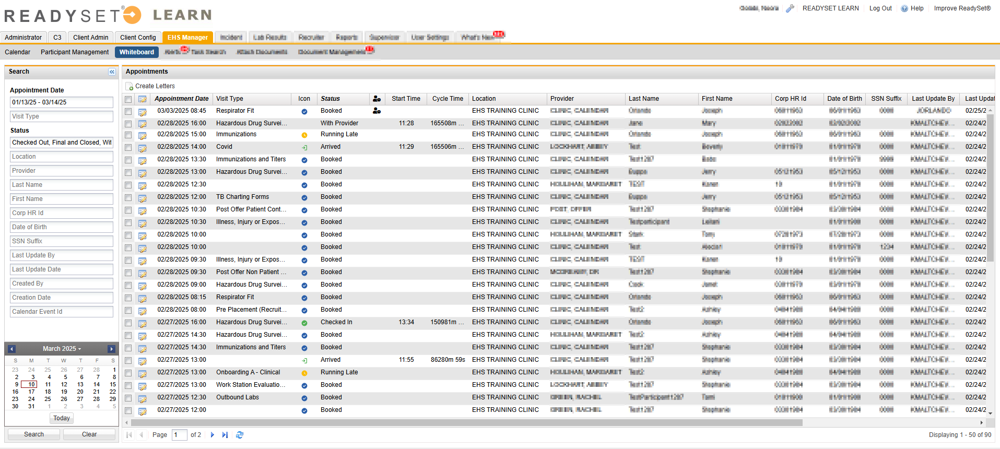
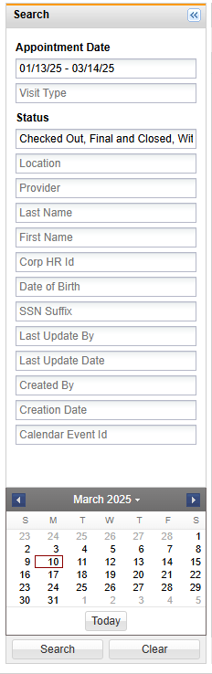

The Whiteboard view, also referred to as the Appointment View, is a way for EHS Managers to view and manage appointments. The Whiteboard displays a list view of appointments that defaults to the current date and provides a view of appointment statuses using Appointment Status icons. EHS Managers can also access the participant record directly from this list.

To access the Whiteboard View, you must submit a HelpDesk ticket with a request to enable the view. Once access to the view is granted, any user with access to the EHS Manager tab will have access to the view.
By default, the Whiteboard View displays appointments for the current date. The Whiteboard can be filtered by various criteria using the criteria fields and the calendar.

To search and filter appointments:
EHS Managers can create letters in bulk directly from the Whiteboard View. Letters must be configured for your organization in order to be created.
To create letters from the Whiteboard View: